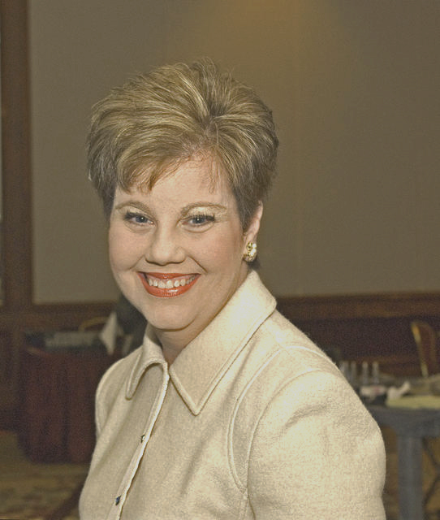

by Amy Friedman, M.D.

Printed below in its entirety is the poignant eulogy delivered at the funeral of Kris Robinson, former Executive Director and CEO of AAKP. We at The Nephron Information Center are proud to publish this tribute as a final encomium to a true friend and ally of our renal community in the fight against kidney disease.
Today, mine is the voice of each and every one of the 26 million American adults with chronic kidney disease, it is the voice of professionals in all spheres of the renal community, the voice of those fortunate enough to have directly shared Kris Robinsons friendship, the voice of her close relatives, and the voice of her parents each of whom physically gave her life. As one, we are here to say farewell and thank you to a truly incredible woman.
At this difficult, untimely moment of formal separation from Kris in this world, it is helpful to turn to her own words. In 2007, Kris wrote; The easy things in life dont make us who we are. The really tough things do. Kris had earned the right to make that statement. Born with one kidney, as a college student she was confronted with the failure of the remaining one, and received Percy, her fathers kidney, through the miracle of transplantation. She later wrote that it hardly seemed fair to receive such devastating news. This became the defining moment of her life. Instead of allowing chronic illness to control her, Kris bravely chose to embrace the road she and her family had not previously imagined following. It was her ability to turn that personal journey into a fun filled, magical adventure ride, and the rarely encountered generosity of spirit with which she shared her experiences that inspires. She was evanescent.
With a degree in journalism, Kris brought her talents and infectious enthusiasm to the American Association of Kidney Patients 18 years ago. As AAKPs Executive Director/CEO, she guided its growth into the polished, mature organization that today receives 1 million internet hits per year and emerges first from a Google search for kidney patient organizations. Thanks to her professional nourishment, AAKP has become so strongly rooted in the healthcare environment that its formal statements, and the comments of its leaders, are routinely sought by politicians, and journalists (as recently as 5 days ago in the New York Times) to definitively represent the patient perspective.
A natural leader, Kris was often asked to participate in high profile regional, national and international policy making activities, under the auspices of the NIH, HHS, HCFA, CMS and UNOS advisory Boards and Committees. Twice, in 2004 and 2007 she continued AAKPs proud history of bringing the patient experience to Congress, with her testimony before the Subcommittee on Health of the House of Representatives Committee on Ways and Means. As an author, her written words have translated medical jargon into patient friendly language without dilution of the content of the messages she wanted to deliver, in the pages of periodicals ranging from her precious Renalife, to Newsweek. Remarkable as these accomplishments are, they hardly suffice in describing Kris gifts.
If AAKP is the voice of kidney patients everywhere, Kris has been a primary author of their words. For the renal community and this nations policy makers, she was their ebullient, human face. The purity of her representation, unstained either by the politics of healthcare providers or corporate objectives, and the truth of her words led to her recognition as the consummate renal ambassador. She was one of the few whose lives extend far beyond their immediate grasp, to touch countless, invisible, unnamed people they will never personally meet.
Greatness can, at times, lead to self absorption. This was not Kris way. Even during some of the darkest moments Kris looked out for her beloved AAKP, insisting on working on her laptop from her hospital bed. Unable to attend the most recent convention, she nevertheless, simultaneously made behind the scenes contributions, and strove to protect personal friends from painful worries about her health. Her love and concern for her parents, Troy and Jim, with whom she was so very close, was legendary. Taylor, her dog, shared so much of her attention. One of her pseudo sisters, Brenda Dyson always knew that when a newly subscribed magazine mysteriously arrived in the mail, it was Kris who had signed her up. Just weeks ago, I, arrived home late one evening to find a beautiful flower bouquet that Kris, who my family also considered the other, blond sister had sent to honor my recent victory at work. Kris was a giver, not a taker. The same can be said only of rare individuals.
Kris life was far shorter than she, and we, her colleagues, friends, and family, expected or hoped for. For so many reasons, the past year was particularly difficult. Neither her body nor her acquaintances were always kind. We will do well to reflect on the elegance, dignity and radiance that Kris retained until her last breath. Kris once wrote, I can honestly say that I wouldnt change one experience in my lifetime. Though we dont doubt that she might have made at least a minor revision once she began her final battle with cancer, Kris never had the awful feeling of entitlement that might have led to bitterness or anger.
Ultimately, the measure of ones life is not how long it persisted, but how well it was used. Today, we commit ourselves to remembering Kris in the same, unique style with which she led her so very well spent life. It was not half-empty, but rather a life half-full. We choose to reflect on the sunshine she brought to so many people and celebrate her softly imprinted glow that will always remain in our hearts. My friend, Kris Robinson, might best be characterized as the person, among all I have met, who gave truth to the label of being a Yes I can! winner.
Amy L. Friedman M.D.
November 22, 2008
For more information about Kris Robinson visit this special section at the aakp website